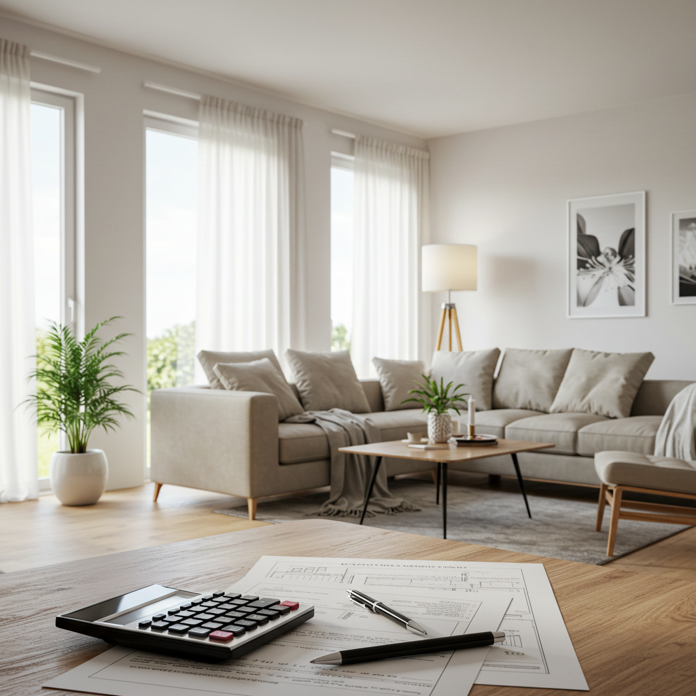
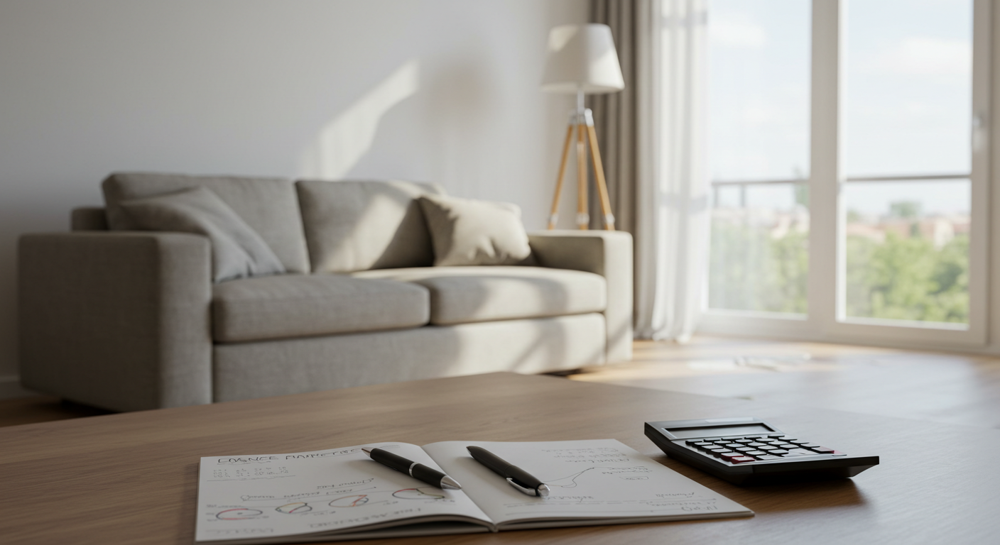
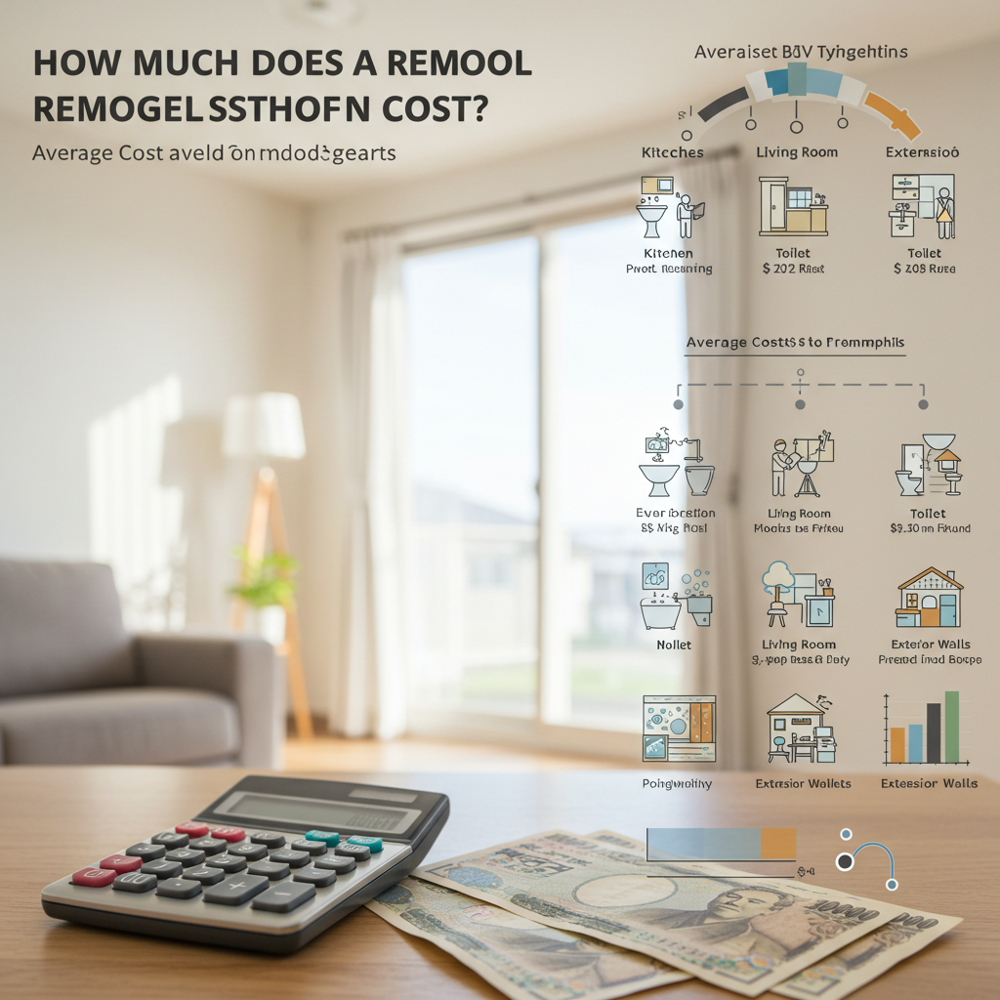
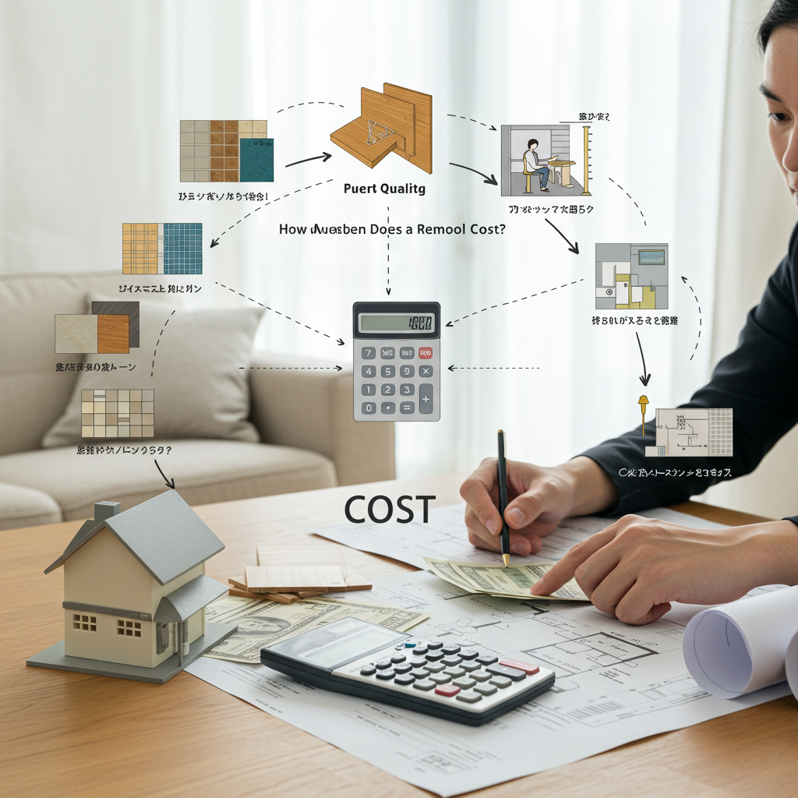
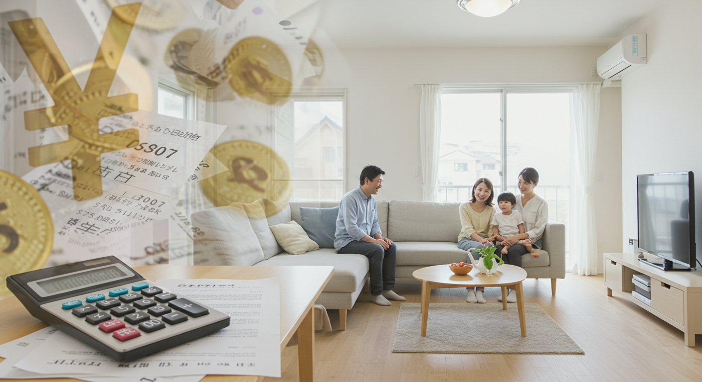

リフォームの値段はいくら？費用相場と後悔しないための全知識

導入

「そろそろ、この古くなったキッチンを新しくしたいな」「子どもが大きくなったから、部屋の間取りを変えたい」「もっと快適で、自分たちらしい暮らしがしたい」。
日々の暮らしの中で、ふと、そんな風に思うことはありませんか？ 住み慣れた我が家を、より心地よく、より機能的な空間へと生まれ変わらせる「リフォーム」。雑誌やテレビで素敵なリフォーム事例を見るたびに、夢は膨らみますよね。
しかし、その夢を現実にしようと考えたとき、多くの人がまず直面するのが「お金」の問題です。「一体、いくらかかるんだろう？」「自分たちのやりたいリフォームは、予算内で収まるのだろうか？」そんな不安が、大きな一歩をためらわせてしまうこともあるかもしれません。
リフォームの費用は、工事の種類や規模、選ぶ建材や設備のグレードによって、まさに千差万別。数万円でできる小さな工事から、数千万円かかる大規模なリノベーションまで、その幅は非常に広いのが実情です。だからこそ、事前にしっかりとした知識を身につけ、ご自身の希望と予算に合った計画を立てることが、後悔しないリフォームの鍵となります。
この記事では、そんなリフォームの「値段」にまつわる疑問や不安を解消するために、知っておくべき情報を網羅的に、そして分かりやすく解説していきます。
キッチンやお風呂といった場所別の費用相場から、費用が変動する具体的な要因、さらには賢く費用を抑えるためのコツや、リフォームで得られるたくさんのメリットまで。この記事を読み終える頃には、漠然としていたリフォーム計画が、より具体的で現実的なものになっているはずです。
これからリフォームを考えているすべての方にとって、この記事が、理想の住まいづくりへの確かな第一歩となることを願っています。さあ、一緒に後悔しないリフォームのための全知識を学んでいきましょう。
リフォームの種類別費用相場

リフォームと一言で言っても、その内容は多岐にわたります。ここでは、代表的なリフォームの種類ごとに、どれくらいの費用がかかるのか、具体的な相場を見ていきましょう。ご自身の計画に近いものから、ぜひ参考にしてみてください。
費用相場１．キッチンリフォーム
毎日使うキッチンは、リフォームの中でも特に人気が高く、満足度も得やすい場所です。キッチンのリフォーム費用は、キッチンの種類やグレード、そして工事の規模によって大きく変動します。
【価格帯別リフォーム内容の目安】
-
～50万円：部分的な交換・修理
この価格帯では、キッチン全体を交換するのではなく、部分的な改修が中心となります。例えば、古くなったガスコンロを最新のIHクッキングヒーターに交換する、換気扇（レンジフード）を掃除のしやすい新しいモデルに取り替える、食洗機を後付けで設置する、といった工事が可能です。水栓金具の交換や、キッチンの扉にシートを貼ってイメージチェンジするといった、比較的手軽なリフォームもこの範囲で実現できます。既存のキッチンを活かしつつ、不満のある部分だけを解消したい場合におすすめです。 -
50万円～100万円：基本的なシステムキッチンの交換
この価格帯が、キッチンリフォームで最も一般的なボリュームゾーンと言えるでしょう。既存のキッチンと同じ位置、同じサイズで、新しいシステムキッチンにまるごと交換する工事が可能です。選べるシステムキッチンは、各メーカーの普及価格帯（スタンダードグレード）のものが中心になります。機能はシンプルですが、最新のキッチンになることで、収納力や清掃性は格段に向上します。工事内容としては、既存キッチンの解体・撤去、新しいキッチンの組立・設置、給排水・ガス・電気の接続工事などが含まれます。キッチンの床や壁紙の張り替えも、素材を選べばこの予算内で同時に行える場合があります。 -
100万円～150万円：中級グレードのシステムキッチンへの交換やレイアウト変更
予算が100万円を超えてくると、選べるキッチンのグレードが上がり、機能性やデザイン性の選択肢がぐっと広がります。例えば、天板を汚れに強い人工大理石にしたり、静かに閉まるソフトクローズ機能付きの引き出しを選んだり、デザイン性の高い水栓やレンジフードを導入したりすることが可能です。 また、この価格帯からは、キッチンのレイアウト変更も視野に入ってきます。例えば、壁付けだったI型キッチンを、リビングを見渡せる対面式のカウンターキッチンに変更する、といった工事です。ただし、キッチンの位置を動かすと、給排水管やガス管、電気配線、排気ダクトの移設工事が必要になるため、費用は高くなる傾向にあります。 -
150万円～：ハイグレードなキッチンや大規模な工事
この価格帯では、各メーカーの最高級グレードのシステムキッチンを選ぶことができます。天然石のカウンタートップや、海外製の食洗機・オーブン、デザイン性の高いオーダーメイドキッチンなども選択肢に入ります。 間取りを大きく変更するような、キッチン空間全体のリノベーションも可能です。例えば、隣の部屋との壁を取り払って、広々としたLDK（リビング・ダイニング・キッチン）を創り出す、といった大がかりな工事です。この場合、キッチンの費用に加えて、壁の解体・造作費用、内装費用、電気工事費用などが追加でかかります。理想のキッチン空間を徹底的に追求したい方向けの価格帯と言えるでしょう。
費用相場２．お風呂リフォーム
一日の疲れを癒すお風呂は、リラックスできる快適な空間にしたいものですよね。お風呂のリフォームは、主に「ユニットバスからユニットバスへの交換」が中心となりますが、昔ながらの「在来工法」の浴室からのリフォームも多く見られます。
【価格帯別リフォーム内容の目安】
-
～50万円：部分的な修理・設備の交換
この価格帯では、浴室全体のリフォームではなく、部分的な改修がメインです。例えば、シャワーヘッドと水栓の交換、換気扇の交換、浴室のドアの交換、壁に化粧パネルを貼る、床に浴室用シートを貼る、といった工事が考えられます。また、給湯器の交換もこの価格帯で行われることが多いリフォームです。浴槽のひび割れなどを塗装で補修するといった工事も可能です。 -
50万円～100万円：普及価格帯のユニットバスへの交換
この価格帯は、既存のユニットバスを新しいユニットバスに交換する、最も標準的なリフォームの費用相場です。戸建てで一般的な1坪（1616）サイズ、マンションで多い0.75坪（1216）サイズの、各メーカーの普及価格帯（スタンダードグレード）のユニットバスが選べます。工事には、既存ユニットバスの解体・撤去、新しいユニットバスの組立・設置、給排水・電気工事などが含まれます。最近のユニットバスは、断熱性や清掃性が格段に向上しているため、基本的なグレードのものでも、リフォーム後の満足度は非常に高いでしょう。 -
100万円～150万円：中級グレードのユニットバスへの交換やオプションの追加
予算が100万円を超えると、ユニットバスのグレードを上げたり、快適性を高めるオプションを追加したりすることができます。例えば、お湯が冷めにくい高断熱浴槽、乾きやすく滑りにくい床材、節水効果の高いシャワーなどが標準装備された中級グレードのユニットバスが選べます。 オプションとしては、雨の日や花粉の季節に便利な「浴室換気乾燥暖房機」の設置が人気です。また、肩湯やジェットバス機能、ミストサウナ機能などを追加して、よりリラックスできるバスタイムを実現することも可能です。 -
150万円～：ハイグレードなユニットバスや在来工法からのリフォーム
この価格帯では、デザイン性に優れたハイグレードなユニットバスや、大型のユニットバスを選ぶことができます。テレビの設置や、調光機能付きの照明、高音質の浴室スピーカーなど、ホテルのような空間を演出するオプションも充実しています。 また、タイル貼りの在来工法の浴室からユニットバスへリフォームする場合も、この価格帯になることが多くなります。在来工法の浴室は、解体してみると土台や柱が腐食しているケースがあり、その補修費用が別途必要になることがあります。解体・撤去にも手間がかかるため、ユニットバスからユニットバスへの交換よりも費用は高くなる傾向にあります。
費用相場３．トイレリフォーム
トイレは、家の中で最も小さな空間の一つですが、リフォームによる変化を実感しやすい場所でもあります。最新のトイレは、節水性能や清掃性が飛躍的に向上しており、リフォームの満足度が高いのが特徴です。
【価格帯別リフォーム内容の目安】
-
～20万円：便器のみの交換
この価格帯では、内装には手を加えず、便器本体の交換のみを行う工事が中心です。タンクと便座が一体になったタイプの、基本的な機能（温水洗浄、暖房便座など）を備えたトイレが選べます。工事は比較的簡単で、半日～1日で完了することがほとんどです。古いトイレから交換するだけで、大幅な節水効果が期待でき、水道代の節約にもつながります。 -
20万円～40万円：便器交換＋内装リフォーム
トイレリフォームで最も多いのがこの価格帯です。便器の交換と合わせて、壁紙（クロス）と床（クッションフロア）の張り替えも行います。便器を一度取り外すため、普段は掃除しにくい床や壁もきれいに張り替えることができ、空間全体が一新されます。 選べる便器の種類も増え、タンクのない「タンクレストイレ」や、フチなし形状でお手入れが簡単なモデル、自動でフタが開閉したり、自動で洗浄したりする高機能なモデルも選択肢に入ってきます。ただし、タンクレストイレは手洗い器がなくなるため、別途手洗いカウンターを設置する必要がある場合が多く、その費用も考慮する必要があります。 -
40万円～：高機能トイレやレイアウト変更、和式から洋式への変更
この価格帯では、デザイン性の高いタンクレストイレと、おしゃれな手洗いカウンターを組み合わせるなど、こだわりの空間づくりが可能です。収納キャビネットを設置して、トイレットペーパーや掃除用品をすっきりと隠すこともできます。 また、トイレの位置を移動したり、和式トイレから洋式トイレへ変更したりする大がかりな工事もこの価格帯になります。和式から洋式への変更では、床の解体や段差の解消、給排水管の移設などが必要になるため、費用は高くなります。高齢のご家族がいる場合など、使いやすさを重視したリフォームで検討されることが多い工事です。
費用相場４．洗面所リフォーム
洗面所は、歯磨きや洗顔、身支度など、家族が毎日使う場所です。リフォームによって、収納力を高めたり、掃除をしやすくしたりすることで、朝の忙しい時間も快適に過ごせるようになります。
【価格帯別リフォーム内容の目安】
-
～20万円：洗面化粧台のみの交換
この価格帯では、既存の洗面化粧台と同じサイズの、新しいものに交換する工事が可能です。主に、幅が60cm～75cm程度の、基本的な機能を備えた洗面化粧台が対象となります。鏡の裏が収納になっている一面鏡タイプや、シンプルなシャワー水栓などが一般的です。古い洗面台を新しくするだけで、洗面所全体が明るい印象になります。 -
20万円～40万円：中級グレードの洗面化粧台への交換＋内装リフォーム
この価格帯になると、洗面化粧台の選択肢が広がります。収納力が高い三面鏡タイプや、引き出し式のキャビネット、お手入れがしやすい一体型の洗面ボウルなどが選べます。幅も90cm以上の広いタイプを選択でき、ゆったりと使えるようになります。 トイレと同様に、洗面化粧台の交換と合わせて、壁紙や床の張り替えを行うことが多いのもこの価格帯です。湿気がこもりやすい場所なので、防カビ・抗菌機能のある壁紙や、水に強いクッションフロアを選ぶのがおすすめです。 -
40万円～：ハイグレードな洗面化粧台や造作洗面台
予算が40万円を超えると、デザイン性の高いハイグレードな洗面化粧台や、カウンターと洗面ボウル、鏡、収納などを自由に組み合わせる「造作洗面台」も視野に入ります。ホテルのようなスタイリッシュな空間や、木のぬくもりを感じるナチュラルな空間など、好みに合わせたオリジナルの洗面所をつくることができます。 また、洗面所の隣にある浴室や洗濯機置き場との間取りを見直し、家事動線を改善するようなリフォームもこの価格帯から可能になります。
費用相場５．リビング・居室リフォーム
家族が集まるリビングや、プライベートな時間を過ごす居室は、内装を新しくするだけで、気分も一新されます。工事の範囲によって費用は大きく異なります。
【価格帯別リフォーム内容の目安】
-
10万円～50万円：壁紙・床の張り替え
最も手軽なリフォームが、壁紙（クロス）や床材の張り替えです。6畳程度の部屋であれば、壁紙の張り替えで10万円前後、床の張り替え（クッションフロアや合板フローリング）で10万円～20万円程度が目安です。部屋の大部分を占める壁と床の色や素材を変えるだけで、空間の雰囲気はがらりと変わります。 -
50万円～200万円：間取り変更や収納の増設
この価格帯になると、内装の刷新に加えて、より機能性を高めるリフォームが可能になります。例えば、壁一面にクローゼットを新設する、押入れをウォークインクローゼットに改造する、といった収納力をアップさせる工事が人気です。 また、隣り合う2つの子ども部屋の間の壁を取り払って広い一部屋にしたり、逆に広いリビングの一部を壁で仕切って書斎スペースを作ったり、といった間取りの変更も可能です。ただし、構造上取り払えない壁（耐力壁）もあるため、専門家との相談が必須です。 -
200万円～：大規模な間取り変更や断熱リフォーム
リビングと隣の和室をつなげて広々としたLDKにするなど、複数の部屋をまたぐ大規模な間取り変更は、この価格帯になります。壁の解体・造作だけでなく、床や天井の補修、電気配線の変更なども伴うため、工事は大規模になります。 さらに、快適な室内環境を実現するための「断熱リフォーム」もこの価格帯で検討されます。壁や天井に断熱材を追加したり、既存の窓を断熱性の高い二重窓（内窓）や複層ガラスのサッシに交換したりする工事です。夏は涼しく、冬は暖かい家になり、光熱費の削減にもつながります。
費用相場６．外壁・屋根リフォーム
家の外観を美しく保ち、雨風や紫外線から建物を守るために不可欠なのが、外壁や屋根のリフォームです。定期的なメンテナンスが必要で、足場を組む必要があるため、一度にまとめて行うのが効率的です。
【一般的な費用相場】
- 外壁塗装：80万円～150万円
- 屋根塗装：40万円～80万円
- 外壁と屋根の同時塗装：100万円～200万円
費用は、家の大きさ（塗装面積）や、使用する塗料のグレードによって大きく変わります。塗料には、アクリル、ウレタン、シリコン、フッ素、無機塗料など様々な種類があり、グレードが高いものほど耐久年数が長く、価格も高くなります。 また、外壁のひび割れ（クラック）の補修や、シーリング（コーキング）の打ち替えなどの下地処理も費用に含まれます。これらの費用とは別に、工事期間中に必ず必要となる「足場の設置・解体費用」が15万円～25万円程度かかります。
- 外壁の張り替え・カバー工法：150万円～300万円
- 屋根の葺き替え・カバー工法：100万円～250万円
塗装では補修しきれないほど劣化が進んでいる場合は、外壁材や屋根材そのものを新しくする工事が必要になります。「張り替え（葺き替え）」は既存の材を撤去して新しいものにする方法、「カバー工法」は既存の材の上に新しい材を重ねて張る方法です。カバー工法の方が、解体費用や廃材処分費がかからないため、比較的安価に施工できます。
費用相場７．部分リフォーム
家全体ではなく、特定の箇所だけを改修するリフォームも数多くあります。
- 玄関ドアの交換：20万円～50万円
防犯性の向上や断熱性のアップ、デザインの一新が目的です。既存のドア枠を活かして新しいドアを取り付ける「カバー工法」なら、1日で工事が完了します。 - 窓の交換・内窓の設置：5万円～30万円（1箇所あたり）
断熱性、防音性、結露防止に効果的です。既存の窓の内側にもう一つ窓を設置する「内窓（二重窓）」の設置は、比較的手軽で効果も高いため人気があります。 - 給湯器の交換：15万円～40万円
給湯器の寿命は10年～15年が目安です。お湯が出なくなる前に交換するのがおすすめです。省エネ性能の高い「エコキュート」や「エコジョーズ」に交換すると、月々の光熱費を削減できます。 - 耐震補強工事：25万円～200万円以上
工事内容によって費用は大きく異なります。壁に筋交いを入れる、基礎を補強する、金物で接合部を強化する、といった工事があります。まずは専門家による耐震診断（5万円～40万円程度）を受けることから始まります。
費用相場８．フルリノベーション
間取りを根本から見直し、住まいを全面的に刷新するのがフルリノベーションです。内装や設備をすべて解体して、骨組み（スケルトン）の状態にしてから、新たに空間を創り上げていきます。
- マンション：500万円～1500万円（坪単価40万円～70万円程度）
マンションの場合、専有部分がリノベーションの対象です。費用は、広さや内装材・設備のグレードによって大きく変動します。水回りの位置を大きく変更すると、配管工事の制約や費用増につながるため注意が必要です。 - 戸建て：800万円～2500万円以上（坪単価50万円～80万円程度）
戸建ての場合は、内装・設備に加えて、外壁や屋根、外構（エクステリア）のリフォームも同時に行うことが多く、費用は高くなる傾向にあります。耐震補強や断熱改修も併せて行うことで、住宅の性能をまるごと向上させることができます。設計料やデザイン料が別途必要になることもあります。
費用相場９．増築・減築リフォーム
家族構成の変化に合わせて、家の床面積を増やしたり（増築）、逆に減らしたり（減築）するリフォームです。
- 増築：100万円～（1畳あたり30万円～80万円程度）
増築費用は、増築する面積や、どのような部屋を作るか（居室か、水回りか）によって大きく異なります。既存の建物との接続部分の工事が複雑で、費用もかさみます。また、建築基準法上の建ぺい率や容積率などの制限があるため、必ず専門家に相談が必要です。 - 減築：300万円～
使わなくなった2階部分をなくして平屋にする、といったリフォームです。工事費用の内訳は、解体費用、屋根や外壁の補修・新設費用が主になります。減築により、メンテナンス費用や固定資産税が安くなるというメリットがあります。
費用相場１０．バリアフリーリフォーム
高齢者や身体の不自由な方が、安全で快適に暮らせるように住まいを改修するリフォームです。
- 手すりの設置：1万円～5万円（1箇所あたり）
廊下、階段、トイレ、浴室など、転倒の危険がある場所に設置します。 - 段差の解消：2万円～20万円
敷居の撤去やスロープの設置など、工事内容によって費用は異なります。 - ドアを引き戸に交換：10万円～25万円
車椅子での移動がしやすくなり、開閉時の体の負担も軽減されます。 - 浴室リフォーム：50万円～150万円
ユニットバス交換と合わせて、出入り口の段差解消、浴槽の高さ調整、手すりの設置などを行います。 - トイレリフォーム：20万円～60万円
和式から洋式への変更、手すりの設置、車椅子対応のスペース確保などを行います。
これらのリフォームには、介護保険の「住宅改修費助成制度」や、自治体の補助金が利用できる場合があります。
費用相場１１．二世帯住宅リフォーム
親世帯と子世帯が共に暮らすためのリフォームです。同居のスタイルによって、工事内容と費用が大きく変わります。
- 部分共有型：300万円～1000万円
玄関は共有しつつ、キッチンや浴室などの水回りの一部を増設するスタイルです。ミニキッチンの増設や、2階にシャワールームやトイレを新設する工事が中心となります。 - 完全分離型：800万円～2000万円以上
玄関から水回り、リビングまで、すべてを世帯ごとに完全に分けるスタイルです。1階と2階で分ける「上下分離型」や、建物を左右で分ける「左右分離型」があります。大規模な間取り変更や水回りの増設が必要となり、ほとんど増築に近い工事になるため、費用は最も高くなります。
リフォーム費用を左右する要素

ここまで種類別の費用相場を見てきましたが、「なぜ同じキッチンリフォームでも、50万円の場合と200万円の場合があるの？」と疑問に思われたかもしれません。リフォーム費用は、主に以下の4つの要素によって大きく変動します。これらの要素を理解することが、適切な予算計画を立てるための第一歩です。
要素１．工事内容と規模
リフォーム費用を決定づける最も大きな要因は、やはり「何をするか」という工事内容とその規模です。
例えば、キッチンのリフォームを考えてみましょう。
一番シンプルなのは、既存のキッチンがあった場所と全く同じ位置に、同じサイズの新しいシステムキッチンを設置する「入れ替え」工事です。この場合、大がかりな配管や電気の工事は不要なため、費用は比較的安く抑えられます。
しかし、「壁付けだったキッチンを、家族の顔が見える対面式のアイランドキッチンにしたい」という希望があったとします。この場合、キッチンの位置を移動させることになります。すると、単にキッチン本体の価格だけでなく、以下のような追加工事が必要になります。
- 給排水管・ガス管の移設工事: 新しいキッチンの場所まで、床下や壁の中を通して配管を延長・移設する必要があります。
- 電気配線工事: IHクッキングヒーターや食洗機、換気扇用の電源、手元を照らす照明の配線を新しい位置まで引く工事です。
- 排気ダクトの移設工事: 換気扇の排気ダクトを、新しい位置から屋外までつなぐ工事です。
- 床や壁の補修・内装工事: 元々キッチンがあった場所の床や壁には、跡が残っています。また、配管工事のために剥がした部分の補修も必要です。結局、LDK全体の床や壁紙を張り替えることになるケースが多くなります。
このように、設備の「位置」を動かすだけで、付帯する工事が格段に増え、費用は数十万円から百万円以上、跳ね上がることがあります。
これはお風呂やトイレでも同様です。ユニットバスのサイズを大きくしたい場合は、壁を移動させる工事が必要ですし、トイレの位置を動かすにも配管工事が伴います。リフォームを計画する際は、「どこまで手を入れるか」という工事の範囲を明確にすることが、費用を把握する上で非常に重要になります。
要素２．建材・設備のグレード
次に費用を大きく左右するのが、使用する建材や住宅設備の「グレード」です。同じ種類の製品でも、素材や機能、デザインによって価格は大きく異なります。
-
住宅設備（キッチン、バス、トイレなど）
システムキッチンを例に取ると、扉の面材一つでも、最も安価なポリエステル化粧合板から、木目調のシートを貼ったもの、本物の木を使った突板や無垢材、美しい光沢の鏡面塗装など、様々な種類があります。当然、後者になるほど価格は高くなります。 カウンタートップ（天板）も、標準的なステンレスや人工大理石から、より高級感のあるクォーツストーン（水晶）、天然の御影石など、選択肢は多彩です。食洗機やオーブン、レンジフードなどのビルトイン機器も、海外製の高性能なものを選べば、それだけで数十万円の価格差が生まれます。 -
内装材（床、壁、天井）
床材で言えば、塩化ビニル素材のクッションフロアや、木目をプリントした合板フローリングは比較的安価です。一方で、天然木を切り出した無垢フローリングは、質感や足触りが良い分、価格は高くなります。 壁材も同様で、最も一般的なビニールクロスは安価でデザインも豊富ですが、調湿効果や消臭効果のある珪藻土や漆喰といった自然素材の塗り壁、デザイン性の高いタイルやエコカラットなどを選ぶと、材料費も施工費（左官工事費など）も高くなります。 -
外装材（屋根、外壁）
外壁塗装で使う塗料も、耐用年数が短いアクリル塗料（5～8年）は安価ですが、シリコン塗料（10～15年）、フッ素塗料（15～20年）と、耐用年数が長くなるほど価格は上がります。初期費用は高くても、塗り替えのサイクルが長くなるため、長期的な視点で見ると高グレードの塗料の方がお得になる場合もあります。
どこにお金をかけ、どこはシンプルにするか。この「グレード」の選択が、リフォームの満足度と予算のバランスを取る上で、非常に重要なポイントになります。
要素３．依頼するリフォーム会社
誰にリフォームを依頼するかによっても、費用は変わってきます。リフォーム会社には、それぞれ得意分野や価格設定に特徴があります。
- 大手ハウスメーカー・リフォーム会社
テレビCMなどで知名度が高く、全国に支店を持っている会社です。総合的な提案力や、ブランドとしての安心感、充実した保証制度が魅力です。モデルハウスやショールームで実物を確認しながら打ち合わせができるのもメリットです。ただし、広告宣伝費や人件費、下請け業者へのマージンなどが価格に上乗せされるため、費用は比較的高くなる傾向があります。 - 地域の工務店
地域に密着して長年営業している会社です。社長や職人さんとの距離が近く、細かな要望にも柔軟に対応してくれることが多いのが特徴です。大手のような経費がかからない分、同じ内容の工事でも比較的安価にできる場合があります。ただし、デザイン提案力や会社の規模は様々なので、過去の施工事例などをよく確認して、信頼できる会社を見極める必要があります。 - 設計事務所・建築家
デザイン性にこだわりたい、唯一無二の空間を作りたい、という場合に依頼する選択肢です。施主のライフスタイルや要望を丁寧にヒアリングし、独創的なプランを提案してくれます。ただし、工事費とは別に、工事費の10%～15%程度の設計・監理料が必要になります。 - 専門工事業者
塗装専門、水道設備専門、内装専門など、特定の分野に特化した会社です。特定の工事だけを依頼する場合、中間マージンが発生しないため、費用を抑えられる可能性があります。しかし、複数の工事が絡むリフォームの場合、それぞれの専門業者を自分で手配し、工程を管理する必要があるため、手間がかかり、専門的な知識も求められます。
どの会社が良い・悪いということではなく、ご自身の希望するリフォームの内容や、何を重視するか（価格、デザイン、安心感など）によって、最適な依頼先は変わってきます。
要素４．その他の諸経費
リフォームの見積書を見ると、純粋な「工事費」以外にも、様々な費用項目があることに気づくでしょう。これらの諸経費も、総額を構成する重要な要素です。
- 現場管理費・諸経費: 工事全体を円滑に進めるための費用です。現場監督の人件費、事務所の経費、書類作成費用、交通費などが含まれ、工事費の10%～15%程度が一般的です。
- 設計料・デザイン料: 大規模なリノベーションや、デザイン性の高いリフォームの場合に発生します。
- 解体・撤去・廃材処分費: 既存のキッチンや壁などを解体し、そこから出た廃材を処分するための費用です。
- 養生費: 工事中に、傷や汚れがついてはいけない場所（廊下や既存の家具など）をシートなどで保護するための費用です。
- 確認申請費用: 増築や大規模なリフォームなど、建築基準法で定められた工事を行う際に、役所に申請するための費用です。
- 仮住まい・引越し費用: 住みながらの工事が難しい大規模なリフォームの場合、一時的に別の場所に住むための家賃や、荷物を移動させるための引越し代、トランクルーム代などが必要になります。
これらの諸経費は、見積書では「一式」とまとめられていることもありますが、総額の15%～25%程度を占めることもあります。見積もりを比較する際は、工事費だけでなく、これらの諸経費がどこまで含まれているかをしっかりと確認することが大切です。
リフォーム費用の賢い抑え方
「理想のリフォームをしたいけれど、予算は限られている…」。誰もが抱える悩みではないでしょうか。しかし、ポイントを押さえれば、無駄な出費をなくし、賢く費用をコントロールすることは可能です。ここでは、リフォーム費用を上手に抑えるための5つの方法をご紹介します。
抑え方１．リフォームの優先順位を決める
リフォームを考え始めると、「あれもやりたい、これも素敵」と、夢はどんどん膨らんでいきますよね。しかし、すべての希望を盛り込むと、予算はあっという間に膨れ上がってしまいます。そこで最も大切なのが、「優先順位」を決めることです。
まずは、家族で話し合い、リフォームで実現したいことをすべてリストアップしてみましょう。そして、そのリストを以下の3つのカテゴリーに分類してみてください。
-
絶対に実現したいこと（Must）:
「キッチンの水漏れを直したい」「冬の寒さを解消するために窓を断熱化したい」といった、生活の安全性や快適性に直結する、必ず解決しなければならない課題です。また、「家族が集まる対面キッチンは絶対に譲れない」といった、リフォームの核となる強い希望もここに含まれます。 -
できれば実現したいこと（Want）:
「キッチンの天板は、憧れの天然石にしたい」「浴室にテレビをつけたい」といった、必須ではないけれど、実現できたら暮らしがもっと豊かになる、という希望です。 -
予算に余裕があれば考えたいこと（Option）:
「ついでに玄関の壁紙も張り替えたい」「リビングの照明をおしゃれなものにしたい」といった、今回のリフォームの主目的ではないけれど、もし予算が余ったら検討したい、という項目です。
このように優先順位を明確にすることで、予算と照らし合わせながら、どこにお金をかけるべきか、どこは我慢するか、という判断がしやすくなります。リフォーム会社との打ち合わせの際にも、この優先順位を伝えることで、予算内で満足度の高いプランを提案してもらいやすくなります。「Must」を確実に実現し、その上で「Want」をどこまで盛り込めるか、という視点で計画を進めていきましょう。
抑え方２．複数業者から見積もりを取る
リフォーム会社を1社に絞って話を進めてしまうのは、あまりおすすめできません。同じ工事内容でも、会社によって見積もり金額は数十万円、場合によっては百万円以上も異なることがあるからです。適正な価格を知り、信頼できるパートナーを見つけるために、必ず「相見積もり（あいみつもり）」を取りましょう。
相見積もりとは、複数の会社（一般的には3社程度）に同じ条件で見積もりを依頼することです。これにより、以下のようなメリットがあります。
- 費用の比較ができる: 各社の見積もりを比べることで、そのリフォームのおおよその相場観が掴めます。極端に高い、あるいは安すぎる会社があれば、その理由を確認する必要があります。
- 提案内容の比較ができる: 同じ要望を伝えても、会社によって提案してくるプランや使用する建材・設備は異なります。自分たちでは思いつかなかったような、より良いアイデアに出会えることもあります。
- 担当者との相性がわかる: リフォームは、担当者とのコミュニケーションが非常に重要です。打ち合わせを重ねる中で、「この人なら親身に相談に乗ってくれそう」「こちらの意図を正確に汲み取ってくれる」といった、相性の良し悪しが見えてきます。
見積書をチェックする際は、単に総額だけを見るのではなく、内訳を細かく確認しましょう。「工事一式」といった大雑把な項目が多い見積書は要注意です。どのような工事に、どのくらいの単価で、どれくらいの費用がかかるのかが詳細に記載されているかどうかが、その会社の誠実さを見極める一つの指標になります。
抑え方３．補助金・助成金制度の活用
国や地方自治体は、特定の性能を向上させるリフォームに対して、費用の一部を補助する制度を設けています。これらを上手に活用すれば、数十万円単位で費用を抑えることが可能です。
補助金の対象となりやすいリフォームは、主に以下の3つの分野です。
-
省エネ関連リフォーム:
地球環境への配慮や、エネルギー効率の高い住宅を増やす目的で、多くの補助金制度が用意されています。- 断熱リフォーム: 窓の交換（内窓設置、複層ガラス化）、壁・床・天井への断熱材の追加など。
- 高効率設備の導入: 高効率給湯器（エコキュート、エコジョーズ）、節水型トイレ、LED照明の設置など。
-
耐震関連リフォーム:
大規模な地震に備え、住宅の倒壊を防ぐためのリフォームです。- 耐震診断: まずは専門家による診断を受け、家の耐震性能を把握します。診断費用を補助してくれる自治体も多いです。
- 耐震補強工事: 診断結果に基づき、壁の補強、基礎の補強、屋根の軽量化などを行います。工事費用に対する補助金は、金額も大きい傾向にあります。
-
バリアフリー関連リフォーム:
高齢者や障害を持つ方が安全に暮らせるようにするためのリフォームです。- 介護保険の住宅改修費: 要支援・要介護認定を受けている方が対象で、手すりの設置、段差解消、引き戸への交換などの費用（上限20万円）のうち、7～9割が支給されます。
- 自治体の補助金: 介護保険とは別に、自治体独自でバリアフリーリフォームへの補助金制度を設けている場合があります。
これらの補助金は、申請期間が限られていたり、予算に達し次第終了したりすることがほとんどです。また、多くの場合、「工事契約前」に申請が必要となります。リフォームを計画し始めたら、まずはお住まいの自治体のホームページを確認したり、リフォーム会社に相談したりして、利用できる制度がないか早めに情報収集を始めましょう。
抑え方４．リフォーム減税制度の活用
リフォームの内容によっては、所得税や固定資産税が減額される「減税制度」を利用できる場合があります。補助金と併用できるケースも多いので、ぜひ知っておきたい制度です。
-
住宅ローン減税（リフォームローン減税）:
10年以上のローンを組んでリフォームを行った場合、年末のローン残高の一定割合が、所得税（控除しきれない場合は住民税）から最大10年間控除される制度です。増改築や大規模な修繕などが対象となります。 -
特定の改修工事に対する所得税の控除:
ローンを利用しない場合でも、耐震、バリアフリー、省エネ、三世代同居対応、長期優良住宅化といった特定の性能向上のためのリフォームを行った場合、工事費用の一定額をその年の所得税から控除できる制度があります。 -
固定資産税の減額:
耐震、バリアフリー、省エネのいずれかのリフォームを行った場合、工事完了の翌年度分の家屋にかかる固定資産税が、一定の割合で減額されます。
これらの減税制度を利用するためには、工事内容や所得など、様々な要件を満たす必要があり、工事完了後に自分で「確定申告」を行う必要があります。リフォーム会社に相談すれば、必要な書類（増改築等工事証明書など）の発行をサポートしてくれますので、積極的に活用しましょう。
抑え方５．DIYで費用を抑える
DIY（Do It Yourself）が得意な方であれば、リフォームの一部を自分で行うことで、人件費（工賃）を節約することができます。
【DIYに向いている作業】
- 壁紙の張り替え、塗装: 比較的チャレンジしやすく、部屋の雰囲気を大きく変えられます。
- 家具の組み立て、棚の取り付け: 収納を増やすための簡単な作業。
- 既存設備の撤去: 解体作業の一部を自分で行う。
ただし、DIYには注意点もあります。
電気工事やガス工事、主要な構造に関わる工事は、資格が必要だったり、専門的な知識がないと危険を伴ったりするため、絶対にプロに任せるべきです。また、仕上がりのクオリティがプロと比べて劣ってしまう可能性や、失敗してかえって補修費用が高くついてしまうリスクも考慮しなければなりません。
リフォーム会社によっては、施主がDIYで参加すること（施主支給や施主施工）を認めてくれる場合があります。どこまでをプロに任せ、どこを自分で行うか、事前にしっかりと打ち合わせをして、無理のない範囲でチャレンジしてみましょう。
リフォームのメリット

リフォームには、もちろん費用がかかります。しかし、その投資に見合う、あるいはそれ以上の多くのメリットを私たちの暮らしにもたらしてくれます。単に古くなったものを新しくするだけでなく、リフォームがもたらす素晴らしい価値について、改めて見ていきましょう。
メリット１．生活の快適性・機能性向上
リフォームの最も大きなメリットは、なんといっても日々の暮らしがより快適で、便利になることです。
例えば、古いキッチンは収納が少なかったり、作業スペースが狭かったり、動線が悪かったりして、毎日の料理がストレスに感じられることがあります。これを最新のシステムキッチンにリフォームすれば、大容量の引き出し式収納で調理器具の出し入れがスムーズになり、広いカウンタートップで効率よく作業が進められます。食洗機を導入すれば、後片付けの負担もぐっと軽くなります。
暗くて寒い北側のお風呂も、断熱性能の高いユニットバスに交換し、浴室暖房乾燥機をつければ、冬でもヒートショックの心配なく、快適なバスタイムを楽しめます。雨の日の洗濯物も、もう悩む必要はありません。
このように、リフォームは、私たちが住まいに対して感じている「ちょっとした不満」や「使いづらさ」を解消し、毎日の生活の質（QOL：Quality of Life）を劇的に向上させてくれる力を持っています。
メリット２．資産価値の維持・向上
建物は、時間と共に必ず劣化していきます。外壁のひび割れや屋根の色あせ、水回りの設備の老朽化などを放置していると、建物の寿命を縮めるだけでなく、見た目の印象も悪くなり、不動産としての資産価値はどんどん下がっていきます。
定期的なメンテナンスとしてリフォームを行うことは、この資産価値の低下を防ぎ、建物を良好な状態に保つために不可欠です。特に、外壁や屋根のリフォームは、雨漏りなどによる構造体の腐食を防ぎ、家そのものを守るという重要な役割を担っています。
さらに、時代に合わせた間取りへの変更や、デザイン性の高い内装への刷新、最新設備の導入といったリフォームは、単なる維持にとどまらず、物件の魅力を高め、資産価値を積極的に「向上」させる効果も期待できます。将来、その家を売却したり、賃貸に出したりする可能性があるのであれば、リフォームは非常に有効な投資と言えるでしょう。
メリット３．省エネ性能の向上と光熱費の削減
近年のリフォームでは、「省エネ」が大きなキーワードになっています。断熱リフォームや高効率設備の導入は、地球環境に優しいだけでなく、家計にとっても大きなメリットがあります。
例えば、古いアルミサッシの窓を、断熱性の高い樹脂サッシや複層ガラスの窓に交換するだけで、家の中の熱が外に逃げにくくなり、外の暑さや寒さが伝わりにくくなります。これにより、冷暖房の効率が格段にアップし、夏は涼しく冬は暖かい、快適な室内環境が実現します。結果として、エアコンの使用頻度が減り、月々の電気代を大幅に削減することができるのです。
また、古い給湯器を、少ないエネルギーで効率よくお湯を沸かす「エコキュート」や「エコジョーズ」に交換したり、トイレを節水型に交換したりすることも、光熱費や水道代の節約に直結します。リフォームの初期費用はかかりますが、その後何年、何十年と払い続ける光熱費を削減できるため、長期的な視点で見れば非常に経済的です。
メリット４．安全性・防災性の向上
家族が安心して暮らせる住まいであることは、何よりも大切なことです。リフォームは、住まいの安全性を高め、万が一の災害に備えるという側面でも重要な役割を果たします。
特に日本は地震が多い国ですから、「耐震性」は非常に重要なテーマです。古い耐震基準（1981年5月以前の旧耐震基準）で建てられた住宅は、現在の基準を満たすように耐震補強工事を行うことが強く推奨されています。壁に筋交いを入れたり、金物で柱や梁を補強したりすることで、大地震が来た際の倒壊リスクを大幅に低減させることができます。
また、高齢のご家族がいる場合は、バリアフリーリフォームが安全な暮らしを支えます。廊下や階段、浴室に手すりを設置する、家の中の段差をなくす、滑りにくい床材に変えるといった改修は、家庭内での転倒事故を防ぐのに非常に効果的です。火災報知器の設置や、防犯性の高い玄関ドア・窓への交換も、家族の命と財産を守るための大切なリフォームです。
メリット５．ライフスタイルの変化への対応
私たちの暮らしは、年月と共に変化していきます。結婚、出産、子どもの成長と独立、親との同居、そして自分たちの老後。家族の形やライフスタイルが変われば、住まいに求められる機能や間取りも変わってきます。
リフォームの大きな魅力は、こうしたライフスタイルの変化に、住まいを柔軟にフィットさせられる点にあります。
- 子どもが生まれたら、リビングの隣の和室をキッズスペースに。
- 子どもが大きくなったら、広い子ども部屋を2つに仕切ってプライベートな空間を確保。
- 子どもが独立したら、使わなくなった部屋をつなげて夫婦の趣味の部屋に。
- 在宅ワークが中心になったら、リビングの一角に集中できるワークスペースを設ける。
- 親との同居を機に、二世帯住宅へリフォームする。
住み替えや建て替えという大きな選択をしなくても、リフォームによって、今の住まいを、その時々の暮らしに最適な形へとアップデートし続けることができます。愛着のある家で、長く快適に暮らし続ける。それを可能にするのが、リフォームなのです。
まとめ
リフォームは、私たちの暮らしをより豊かで快適なものにしてくれる、素晴らしい可能性を秘めています。しかし、そのためには、まず「値段」という現実としっかりと向き合い、正しい知識を持って計画を進めることが不可欠です。
この記事では、キッチンやお風呂といった場所別の費用相場から、費用を左右する要素、賢くコストを抑える方法、そしてリフォームがもたらす多くのメリットまで、後悔しないリフォームのために知っておくべき情報を詳しく解説してきました。
大切なのは、まずご自身がリフォームで「何を一番実現したいのか」という優先順位を明確にすることです。そして、その希望を予算内で叶えるために、信頼できるリフォーム会社というパートナーを見つけることです。そのためには、複数の会社から話を聞き、提案内容と見積もりをじっくり比較検討する「相見積もり」が欠かせません。
また、省エネや耐震、バリアフリーといったリフォームでは、国や自治体の補助金・減税制度が利用できるチャンスが多くあります。少し手間はかかりますが、こうした制度を上手に活用することで、お得に、そして賢くリフォームを実現することができます。
リフォームは、決して安い買い物ではありません。だからこそ、焦らず、一つひとつのステップを丁寧に進めていくことが成功の鍵となります。この記事で得た知識が、あなたの漠然とした「夢」を、実現可能な「計画」へと変えるための一助となれば、これほど嬉しいことはありません。
さあ、あなたの理想の住まいづくりへ向けて、大きな一歩を踏み出してみましょう。